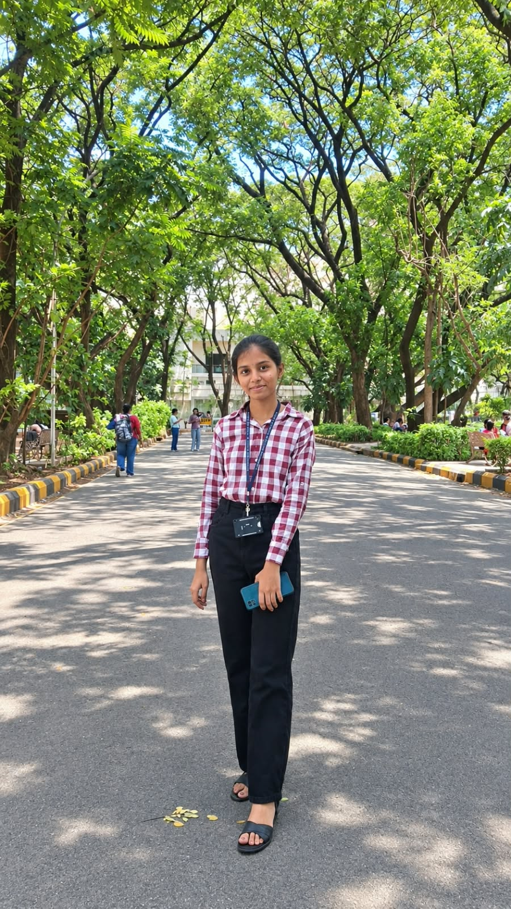
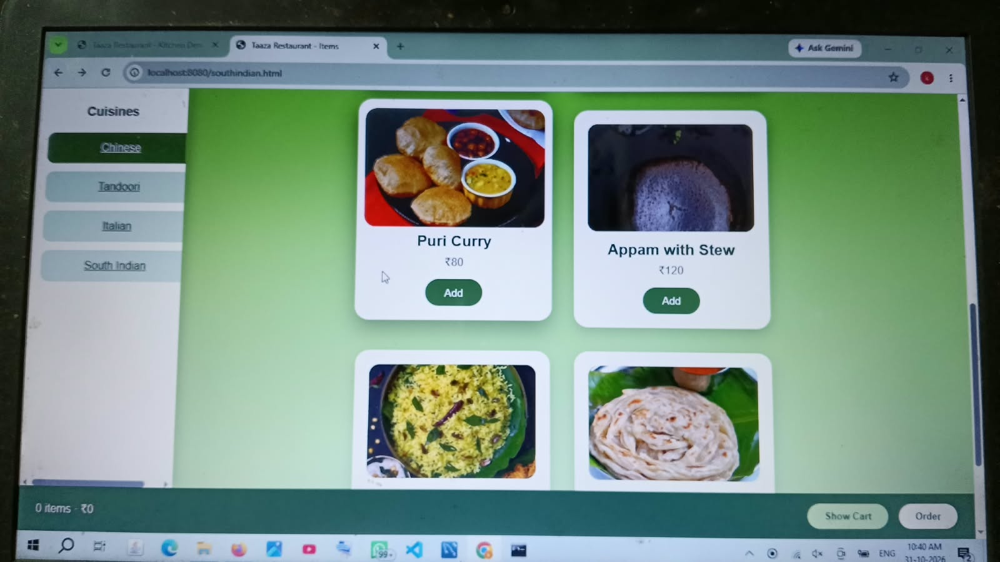
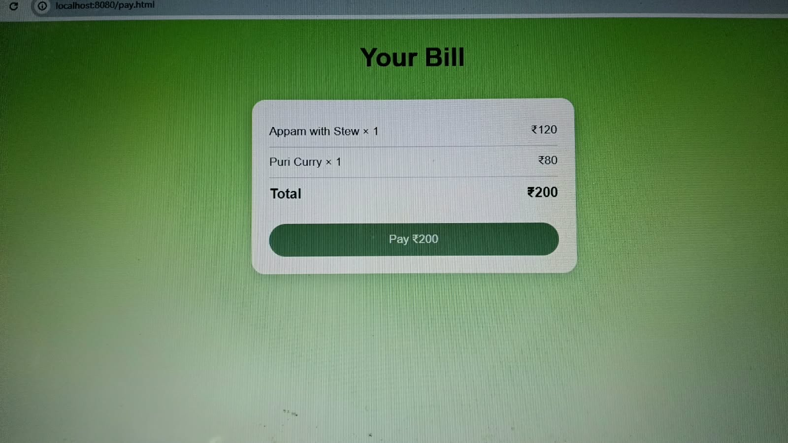
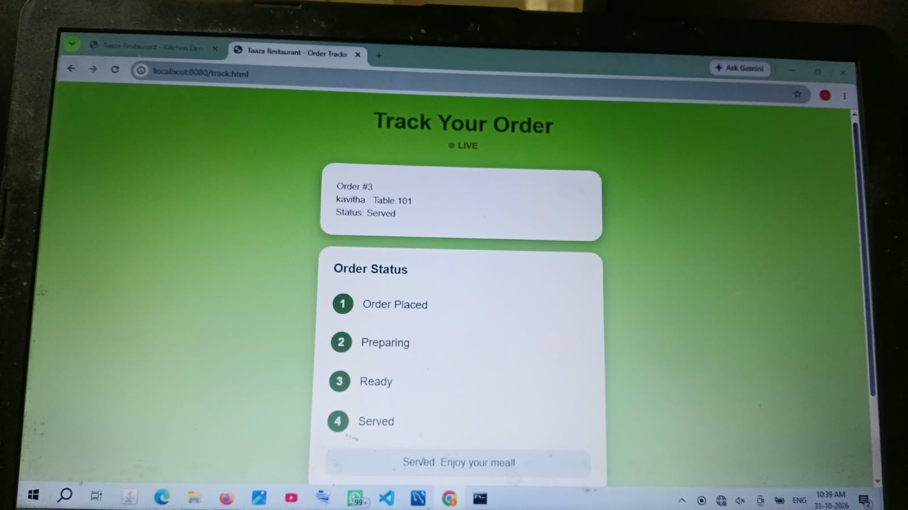
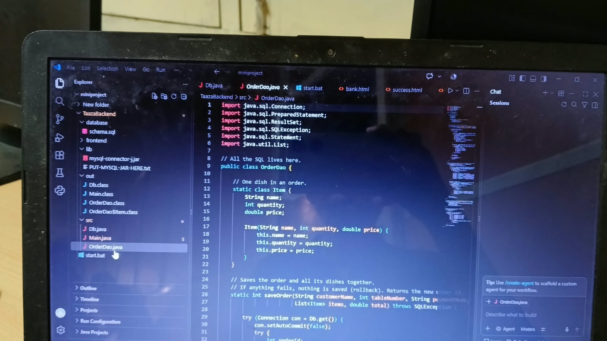
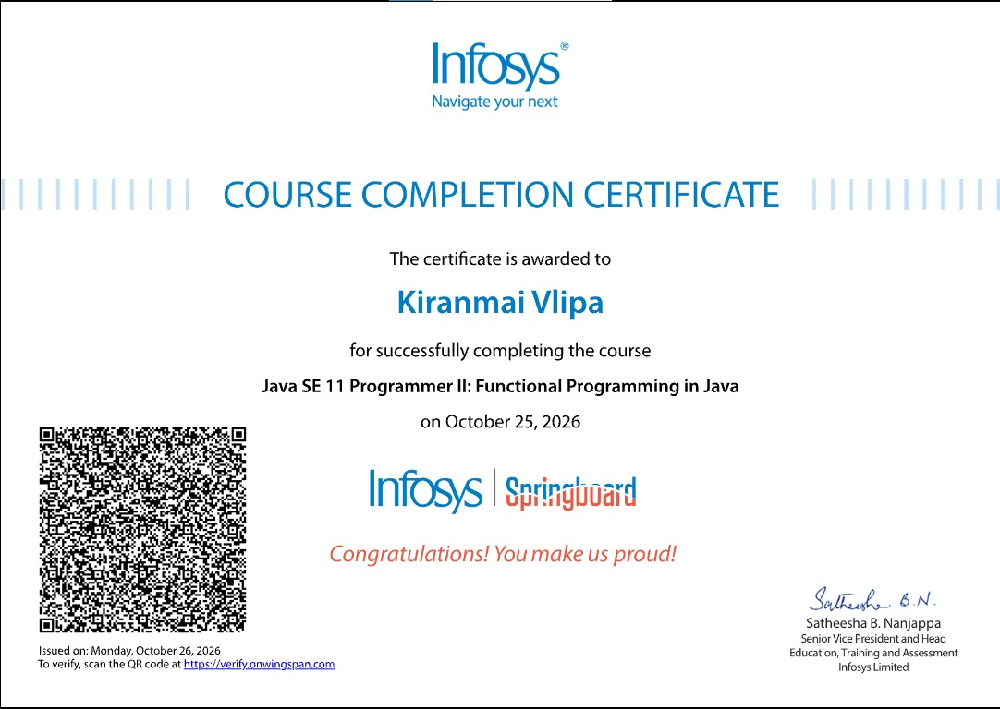
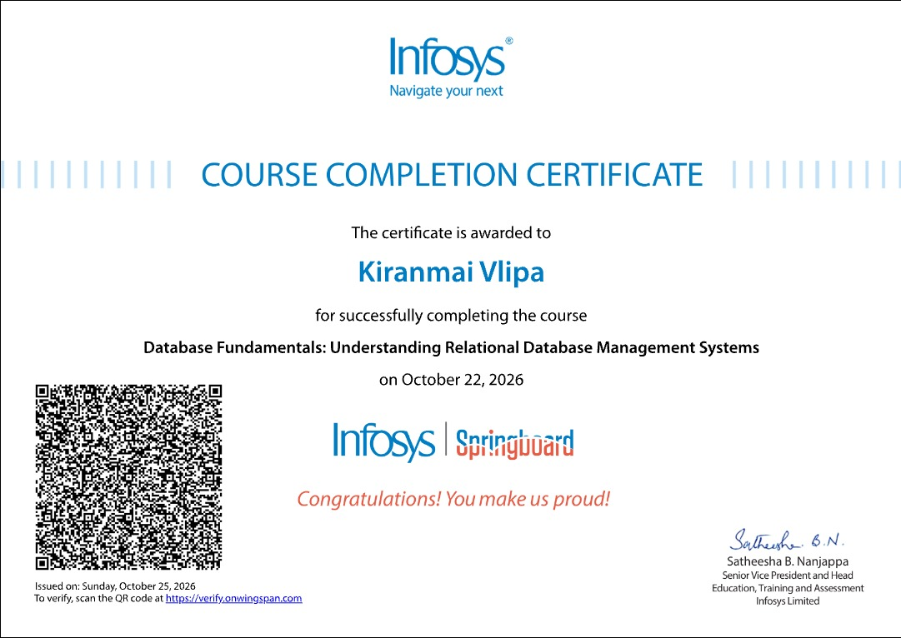

01
CURRENT EDUCATION
B.Tech — CSE (Artificial Intelligence and Machine Learning)
G. Narayanamma Institute of Technology and Science (GNITS)
Lateral entry
TECHNOLOGY · LEADERSHIP · CREATIVITY
Exploring technology, building ideas, leading with purpose and creating possibilities.
A curious builder with interests across technology, practical problem-solving, leadership, creative work and entrepreneurship.
Curiosity
into creation.
Building a path that brings together technology, people and ideas.
01 / A LITTLE ABOUT ME
I’m Vlipa Kiranmai, a B.Tech student in Computer Science and Engineering (Artificial Intelligence and Machine Learning) at GNITS.
I enjoy exploring how technology can become useful, understandable and meaningful in everyday life. My learning journey includes programming, web development, databases, operating systems and emerging AI applications.
Beyond technical work, I value leadership, communication, public speaking and creative expression. Through student-community involvement and project experiences, I’m learning how to work with people, take responsibility and turn ideas into practical efforts.
I’m also interested in entrepreneurship and personal growth. I see this portfolio as a record of what I’m learning, building and discovering—not a claim to have everything figured out.
02 / EDUCATION
CURRENT EDUCATION
G. Narayanamma Institute of Technology and Science (GNITS)
Lateral entryPREVIOUS EDUCATION
Government Polytechnic College for Women (Minority)
Board: SBTET03 / SKILLS & LEARNING
These are areas in which I currently have basic knowledge and continue to build practical experience.
Skill levels are intentionally described as basic rather than represented with percentage bars.
04 / SELECTED PROJECTS
A mix of completed work, ongoing explorations and early-stage concepts. Project status is stated transparently.

Digital restaurant menu board
A digital menu presentation concept intended to make browsing restaurant items more convenient and visually clear. The supplied screens show menu selection, a bill view and order tracking; a Java backend source screenshot is also included in this project record.



A team project focused on medicine identification. You served as team leader. The project began with Flutter and was subsequently developed using HTML, CSS, JavaScript and Local Storage. The concept includes registration, medicine information, reminders and emergency-location functionality; individual feature implementation should be verified before being described as complete.
Role: Team leader
An AI-agent concept that combines historical sales and inventory data, demand forecasting, inventory analysis and code-based calculations for stockout risk, reorder points and order quantities. A natural-language agent can call tools for numerical results and use RAG to retrieve relevant policy information.
Specific model and technology stack not yet supplied.
An ongoing concept exploring the identification and mapping of larger floating marine plastic or debris accumulations using satellite imagery, including Sentinel-2 data. The intended direction includes geographic mapping, movement estimation and monitoring hotspots.
An ongoing project concept to interpret natural-language instructions, map intent to an appropriate Linux command, execute the approved command and present its output in an understandable format. The supported command set and implementation details remain to be confirmed.
A project concept focused on deepfake-related risks and digital fraud. The detection approach, technical implementation, project contribution and development status have not yet been provided.
An innovation-oriented project concept exploring the use of solar energy for agarbatti drying. The proposed design, working principle, hardware components and outcomes can be added when confirmed.
05 / EXPERIENCE & INVOLVEMENT
INTERNSHIP EXPERIENCE
A six-month internship experience at DRDL. Department, dates, responsibilities and specific work undertaken have not been supplied, so this entry stays factual without adding unverified duties.
Professional experienceLEADERSHIP & COMMUNITY
Joint Treasurer / Executive Board Member. A student-community role connected with participation, coordination and responsibility.
Leadership positionState-level technical fest participation.
ParticipationState-level shortlisted.
ShortlistingCommunity involvement.
CommunityExperience in communication and speaking before an audience.
CommunicationA personal creative interest, not presented as a formal certification.
Creative interestSUPPLIED RECOGNITION & MEMBERSHIP DOCUMENTS
These documents are shown as recognition and membership evidence, not as additional claims of competition wins.
06 / CERTIFICATIONS
Five selected credentials are listed. Supplied certificate images are available for Java and DBMS; other entries are text-only until their documents are provided.
Certificate image in linkedIN profile .
Infosys Springboard · Java SE 11 Programmer II: Functional Programming in Java.
View supplied certificate ↗
Certificate image in LinkedIN. The CSI appreciation certificate is displayed separately under recognition.
Internship experience listed; More Details in profile.
Infosys Springboard · Database Fundamentals: Understanding Relational Database Management Systems.
View supplied certificate ↗
07 / A PERSONAL CREATIVE PROJECT
A female-oriented book inspired by my own journey, with the intention of motivating girls, encouraging self-belief and reminding every young dreamer that her ambitions deserve space.
A personal book project. Publication status and cover details have not yet been confirmed.
08 / RESUME
Explore my resume to learn more about my education, skills, projects, leadership experience and achievements.
09 / CONTACT
Have an opportunity, an idea or a project worth exploring? I’d be glad to connect.
kiranmaiulipe@gmail.com ↗